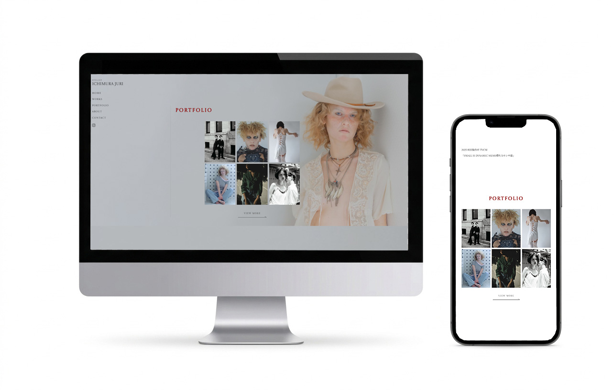

WORKS

概要
スタイリスト Ichimura Juri
ポートフォリオサイト
ターゲット
①スタイリストを探している各クリエイター
②クライアントの世界観をより知りたいと感じる人
制作にあたって
クライアントのファッションスタイルの世界観を表しながら、スマホで見やすいようにしたいという要望を受け、モバイルファーストで設計。ファッション雑誌のようなホワイトスペースを意識しました。
対応範囲
カンプ制作 / 文章構成 / レイアウト / 画像補正 / デザイン / コーディング
使用ツール
Photoshop / Illustrator / Figma / Dreamweaver
実際のページを確認する
View Site